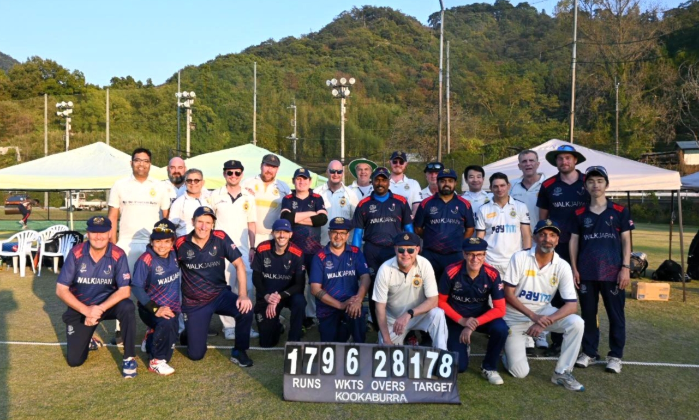

BECC is delighted to welcome international cricket teams to Tokyo for friendly matches and a unique touring experience. A cricket tour to Tokyo offers visiting teams the chance to enjoy competitive and enjoyable matches while also discovering the beauty, culture, and attractions of Japan.
In recent years, we have proudly hosted a number of international teams from the UK and Hong Kong.

If you are interested in visiting Japan to play against us, please contact info@becc-tokyo.org. One of our team members will be in touch to help plan a series.